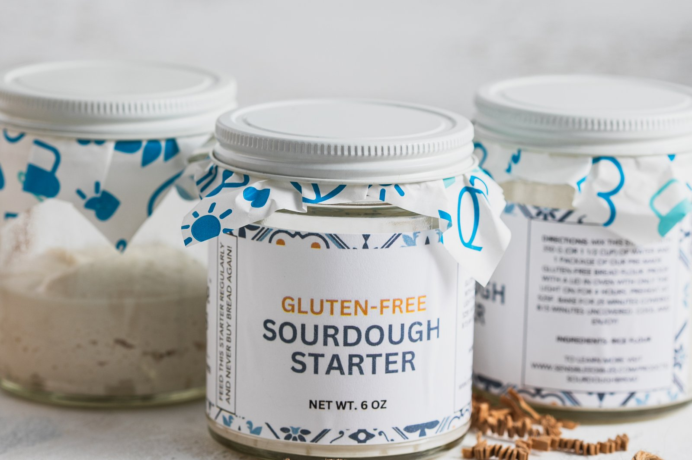
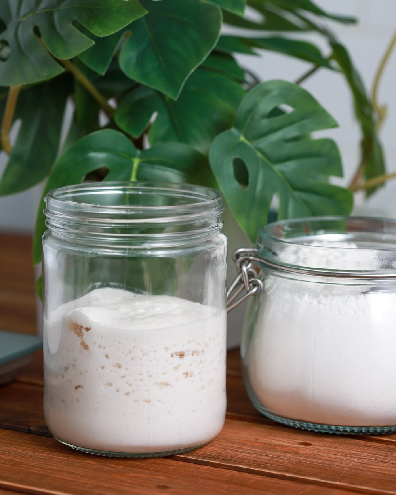
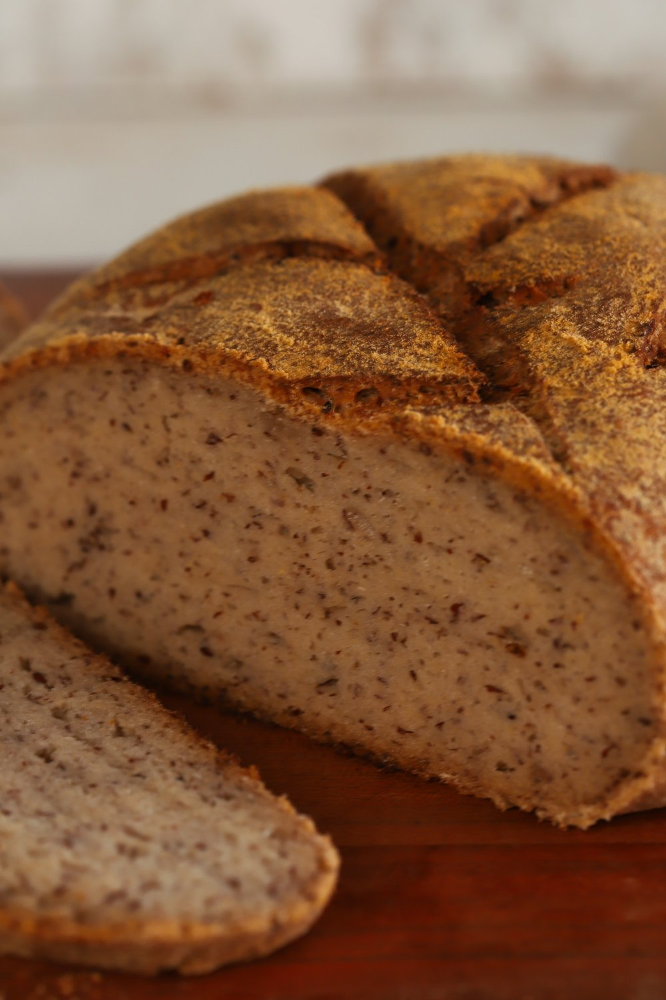

How to make a gluten-free sourdough starter in 4 days
A certified gluten-free, organic, celiac-friendly starter — from our bakery to your kitchen. Four days, two ingredients, and the one thing you actually watch for.

A professional-grade gluten-free starter takes four days and two ingredients: organic brown rice flour and water. That's the whole list. It comes out certified gluten-free, organic, and celiac-friendly, and once it's alive you can keep it going for the rest of your life. This is exactly how we make ours at the bakery — day by day. (Want a conventional wheat-based starter instead? Same method — just swap in any flour you like at the end of day three or four.)
Don't want to make it yourself? We sell our live gluten-free starter at the bakery — a healthy, ready-to-bake jar so you can skip the four days and get straight to baking. Grab one from Sensible →
First: what is a starter?
It's just the perfect ratio of water and flour that creates the ideal environment for bacteria to grow. Over the next few days we build that environment and let the bacteria thrive. As it does, it eats through the flour and produces gas bubbles — carbon dioxide — which makes your sourdough rise and gives it that sourness we all love.
Where does the bacteria come from? It's already in all flour. That's why your mom told you not to eat raw cookie dough. And now that you know that — do not go on Amazon buying dry starter kits. They're just selling you flour.
Two words you'll see
- Discard — throw some out.
- Feed — add more water and more flour.
What you need
Surprisingly little:
- A spatula
- A food scale
- A mixing bowl
- Organic brown rice flour
- Filtered water, room temperature
- Two mason jars
Day 1
Mix 100 g organic brown rice flour with 100 g filtered water. You might need a touch more or less water — you're going for a pancake-like consistency. Not drowning the bacteria, not too thick. Mix it really thoroughly.
Put it in a mason jar and leave it on the counter at room temperature, out of direct sunlight. Put the lid on — most people tell you to drape fabric over it, but you can lid it. The gas produced in 24 hours won't break a glass jar. Not too tight, not too snug. Just resting on.
You don't need a rubber band, and you don't have to feed it at 24 hours on the dot. What you're looking for is the dome — the top will dome up in about 24 hours. That dome means it's thriving. Once it flattens back out, it's running low on food. That's when you feed it.
Day 2
Grab 50 g organic brown rice flour, 50 g water, and your day-one starter. Start with the water, then add about half of yesterday's starter — you don't need to be exact. Mix it really thoroughly so the bacteria spreads uniformly. Then add the 50 g of flour, and again go for that pancake consistency, adding a little water or flour depending on how much it grew.
Use carbon-filtered or reverse-osmosis water. Tap water is loaded with chemicals and toxins that have built up in our water, soil, and air over the years — it can actually hold back the bacteria. Will a starter grow in tap water? Maybe. But not in the best conditions.
Lid it snugly, back on the counter — room temperature, out of direct sunlight.
Day 3
You're one step closer. Today use 100 g water and 100 g organic brown rice flour with your day-two starter — 100 and 100 instead of 50 and 50, because the bacteria is strong now and needs more food over a 24-hour period. Take about half of yesterday's starter, mix well, then add the flour to a pancake consistency.
Why organic brown rice flour, specifically? Because it isn't highly processed like refined flours, which are basically stripped of nutrients and probably kill off a lot of the bacteria. If you want this to actually work in three or four days, use organic brown rice flour.
Back on the counter — room temp, out of the sun. It'll be primo by tomorrow, if not sooner.
Day 4 — you did it

It's day four and you're a professional. You've created a living organism. It should look plump, bubbly, and alive. I'm so confident in these instructions that if I've failed you — come down to the bakery and I'll give you a free gluten-free starter on me.
Keeping it going forever
You can technically keep this alive for the rest of your life. You only need about two tablespoons to keep it going continuously — the rest you'll use to bake.
- Hibernate it in the fridge. That puts the bacteria to sleep, so you don't have to feed it every day — just once a week.
- To feed: take one or two tablespoons of starter and add 50 g water + 50 g organic brown rice flour. Adjust with a little water or flour as needed. Then leave it on the counter 2–4 hours until it grows a bit and hits its peak — then back in the fridge.
- That liquid on top (a little water that builds up) is fine. If it turns black, or smells like a trash can, it's gone bad — start over.
Words of encouragement
Don't get so caught up on the numbers — 50 grams, 100 grams, 24 hours. You don't need a rubber band. You don't need to let it air out. Just look for that pancake-like consistency and keep your eye on the dome. Once it's nice and plump, you know it's ready — ready to feed, or ready for the fridge. Have fun with it. It'll last you the rest of your life.

Ready to bake with it? Here's how we make our gluten-free flax and chia seed sourdough bread.